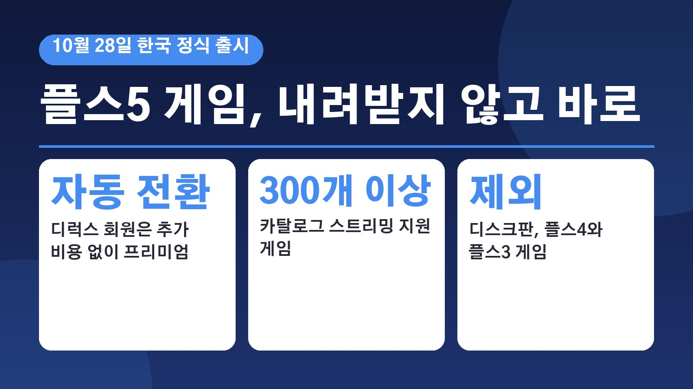
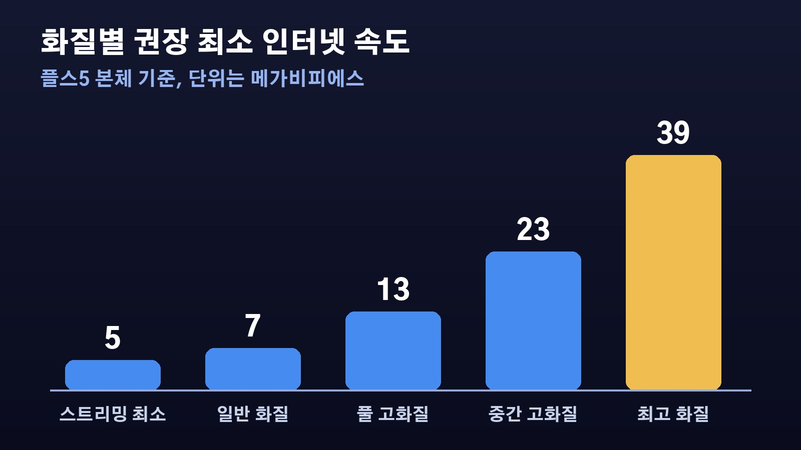

플스 플러스 디럭스가 프리미엄으로 자동 전환, 10월 28일부터 PS5 클라우드 스트리밍으로 되는 게임과 안 되는 게임

플레이스테이션5를 쓰면서 게임 하나 받으려면 용량부터 비우고 한참 기다려야 했던 분들 많으시죠. 다른 나라에서는 되는데 한국에서는 안 되던 클라우드 스트리밍이 드디어 들어옵니다. 소니 인터랙티브 엔터테인먼트가 21일, PS5 게임을 내려받지 않고 바로 할 수 있는 클라우드 스트리밍 서비스를 10월 28일 한국에 정식 출시한다고 밝혔어요. 이미 플레이스테이션 플러스를 쓰고 계신 분이라면 따로 할 일이 있는지, 내 게임은 되는지 궁금하실 텐데 하나씩 정리해 볼게요.
디럭스 회원은 추가 비용 없이 프리미엄으로 바뀐다
가장 먼저 알아 두실 건 요금제 변화예요. 21일부터 플레이스테이션 플러스 디럭스가 프리미엄으로 이름이 바뀌었고, 기존 디럭스 회원은 추가 비용 없이 자동으로 프리미엄 회원이 됐습니다. 따로 신청하거나 바꿀 필요가 없다는 뜻이에요.
월간 게임, 온라인 멀티플레이, 스토어 할인, 클라우드 저장 공간 같은 기존 혜택은 그대로 쓰고, 여기에 클라우드 스트리밍이 더해지는 구조예요. 새 혜택인 스트리밍은 한국 시간 10월 28일부터 쓸 수 있습니다. 클라우드 스트리밍을 쓰려면 프리미엄 회원이어야 해요.
스트리밍으로 할 수 있는 게임, 카탈로그 300개 이상과 내가 산 디지털 게임
프리미엄 회원은 두 가지를 스트리밍으로 할 수 있어요. 하나는 플레이스테이션 플러스 게임 카탈로그에 들어 있는 지원 PS5 게임으로, 호라이즌 포비든 웨스트, 고스트 오브 쓰시마, 파이널 판타지 16, 호그와트 레거시 등 300개 이상이에요.
다른 하나는 내 라이브러리에 이미 있거나 스토어에서 산 지원 디지털 PS5 게임이에요. 붉은사막, GTA 5, 고스트 오브 요테이, 이환, 젠레스 존 제로, e풋볼 등이 해당됩니다. 월간 게임으로 받은 PS5 게임도 제공 기간 안에 라이브러리에 담아 두었다면 스트리밍할 수 있고, 게임 체험판은 PS5 본체에서만 스트리밍이 돼요.
안 되는 것, 디스크판과 PS4 PS3 게임, PS VR2
기대하셨던 분들이 아쉬워할 부분도 분명해요. 한국에서는 클라우드 스트리밍이 PS5 게임만 지원해서 PS4와 PS3 게임은 스트리밍으로 할 수 없어요. 디스크로 산 게임도 안 되고 디지털판 PS5 게임만 됩니다. PS VR2 게임도 지원하지 않아요.

그러니 디스크로 산 게임이 많은 분이라면 스트리밍 혜택을 크게 못 느끼실 수 있어요. 어떤 게임이 되는지는 게임마다 다르기 때문에, 소니는 10월 28일부터 지원 타이틀 목록을 공식 안내 페이지와 본체의 클라우드 스트리밍 전용 홈 화면에서 확인하고 검색할 수 있게 한다고 했습니다.
화질별로 필요한 인터넷 속도, 4K는 39메가비피에스 이상
스트리밍은 게임이 내 본체가 아니라 소니의 클라우드 서버에서 돌아가는 방식이라, 인터넷 상태에 따라 품질이 달라져요. PS5 본체에서는 SDR과 HDR 모두 최대 60헤르츠를 지원하고, 소니가 밝힌 권장 최소 속도는 4K가 39메가비피에스, 1440p가 23메가비피에스, 1080p가 13메가비피에스, 720p가 7메가비피에스 이상이에요. 스트리밍 자체를 하려면 최소 5메가비피에스가 필요하고요.
들고 다니는 기기인 플레이스테이션 포털에서는 PS5 본체에 연결하지 않고도 클라우드에서 바로 게임을 할 수 있어요. 최대 1080p에 60프레임이고, 본체가 꺼져 있거나 다른 가족이 본체를 쓰고 있을 때도 안정적인 고속 와이파이만 있으면 할 수 있습니다. 집에 있는 본체에 원격으로 연결하는 리모트 플레이와는 다른 기능이에요.
세이브와 트로피는 그대로 이어진다
스트리밍으로 하다가 나중에 내려받아서 해도 진행 상황이 끊기지 않아요. 저장 데이터가 클라우드 저장 공간으로 자동으로 맞춰지기 때문에 여러 기기를 오가도 멈춘 곳부터 이어서 할 수 있습니다. 스트리밍 게임에서도 추가 콘텐츠를 사서 바로 쓸 수 있고, 체험판을 스트리밍으로 하다 정식판을 사도 트로피와 진행 상황이 유지돼요.
정리하면 디럭스 회원이셨다면 28일부터 그냥 켜서 쓰시면 되고, 내 게임이 디지털판 PS5 게임인지, 우리 집 인터넷 속도가 원하는 화질을 감당하는지만 확인해 보시면 됩니다. 한국 출시 기념으로 검은사막 아바타 10종 세트도 2027년 3월 31일까지 무료로 받을 수 있다고 하니 플레이스테이션 블로그 공지를 한 번 들러 보셔도 좋겠어요.
참고한 기사: 연합뉴스 소니 PS5 클라우드 게임 서비스 28일 한국 출시 2026년 10월 21일, 플레이스테이션 블로그 한국어 PS5 게임용 클라우드 스트리밍 서비스 10월 28일 한국 정식 출시 2026년 10월 21일
태그
PS5클라우드스트리밍 플레이스테이션플러스프리미엄 플스플러스디럭스 플레이스테이션포털 클라우드게임 PS5 소니인터랙티브엔터테인먼트 게임카탈로그 리모트플레이 10월28일출시